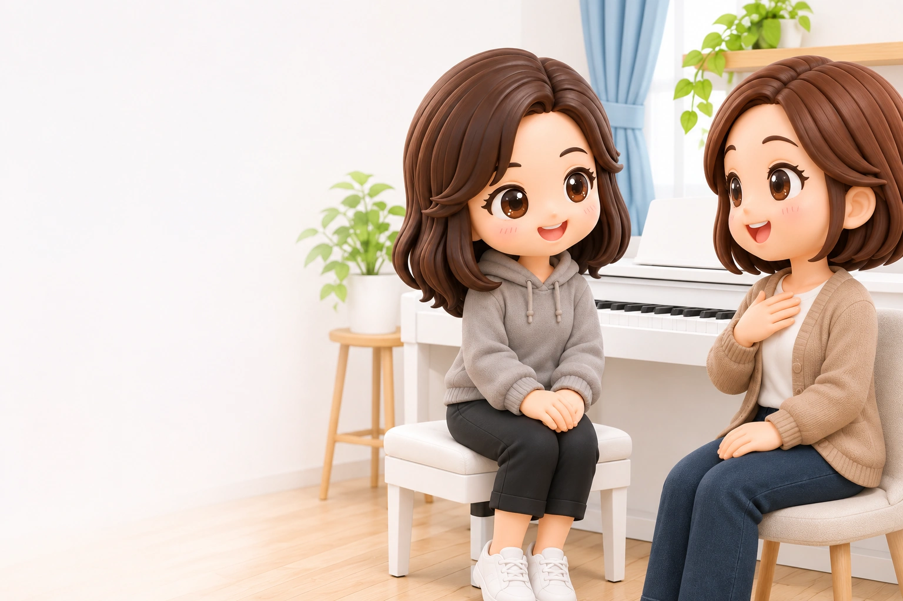
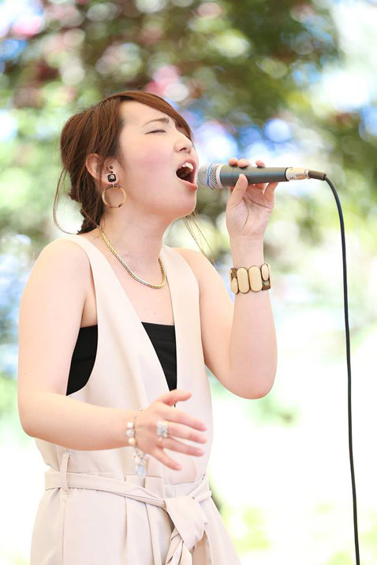
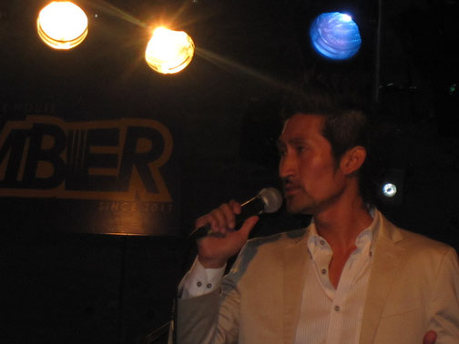
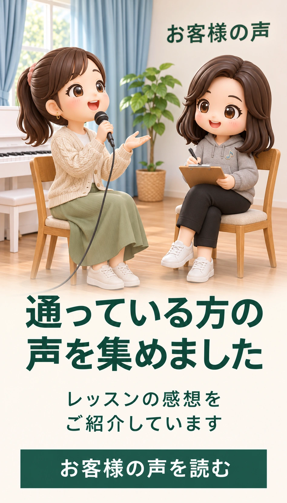
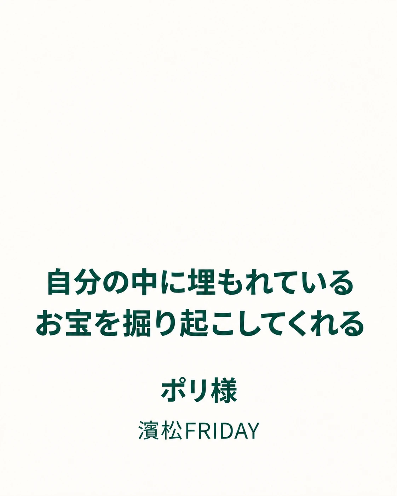
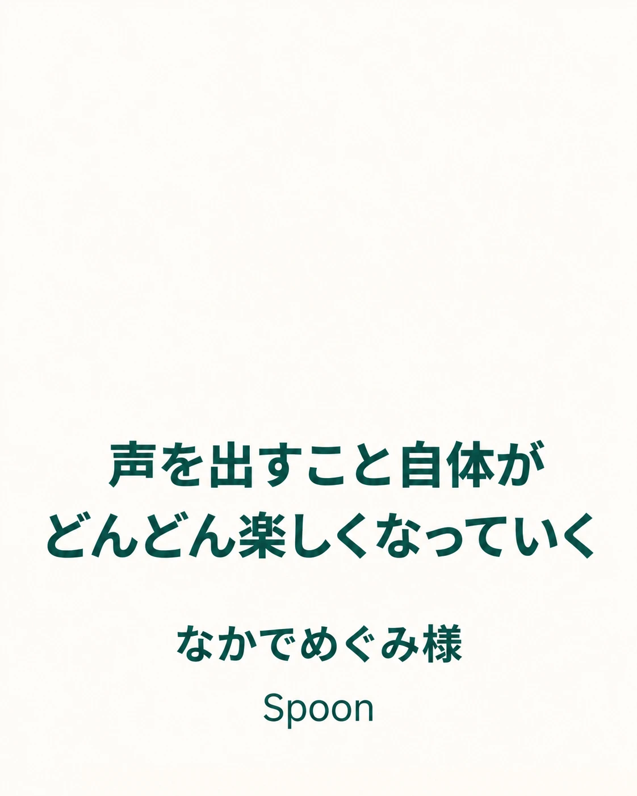
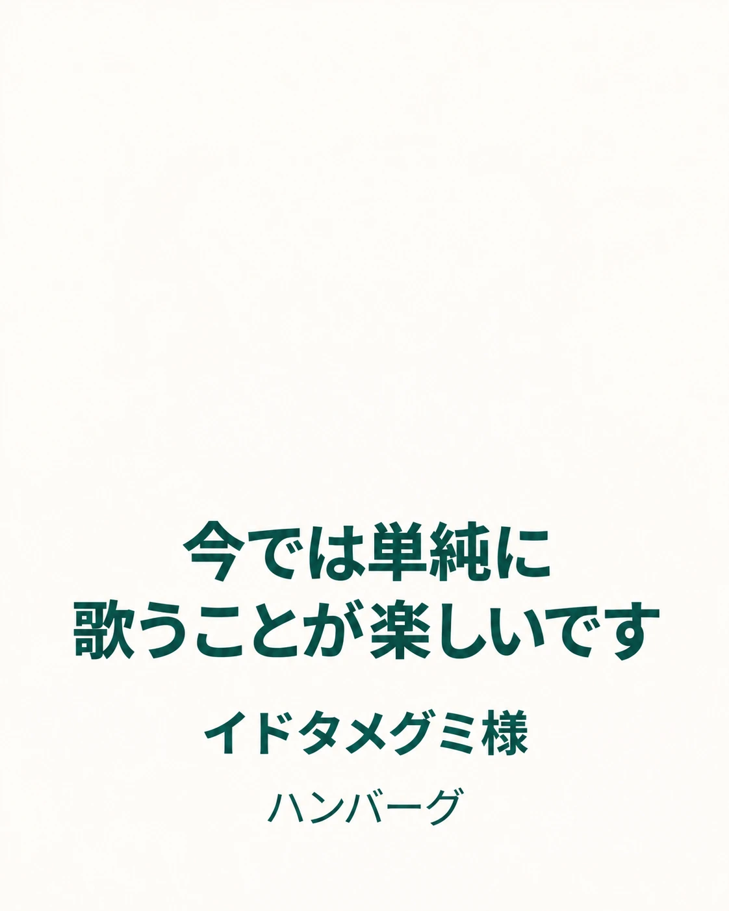
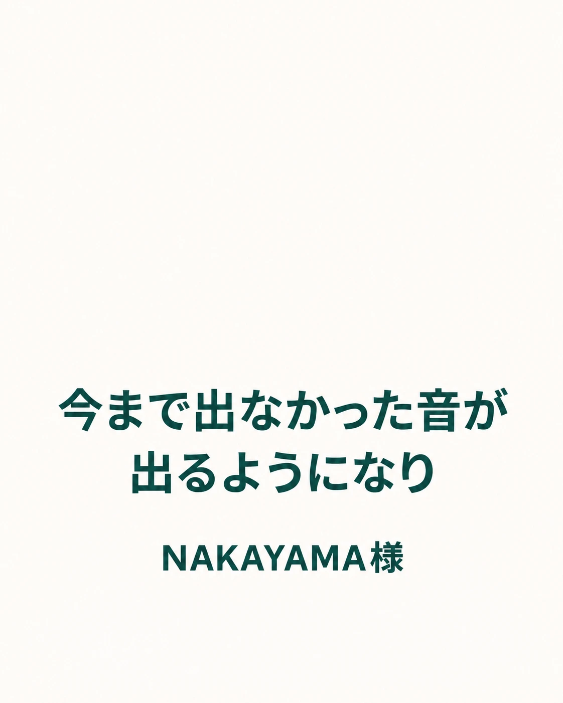
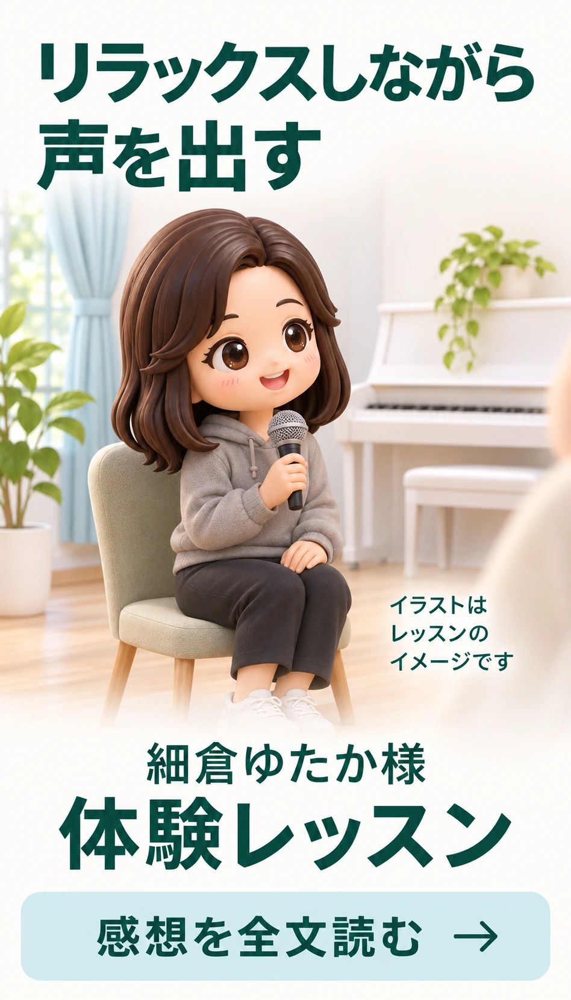

Suzuki Go様（ゴスペルシンガー）
感想を全文読む
「レッスンに行く度に、まるでマジックにかかったように歌声が変わっていきました。苦手な音や自分でも嫌いだった声色が改善され、できなかったビブラートや気付いていなかったクセも直してもらいました。私の人生に張りと目標を与えてくれた、本当に素晴らしいボイストレーナーです。」
Suzuki Go様 （ゴスペルシンガー）

お客様の声
レッスンの感想をご紹介します
「レッスンに行く度に、まるでマジックにかかったように歌声が変わっていきました。苦手な音や自分でも嫌いだった声色が改善され、できなかったビブラートや気付いていなかったクセも直してもらいました。私の人生に張りと目標を与えてくれた、本当に素晴らしいボイストレーナーです。」
Suzuki Go様 （ゴスペルシンガー）

「これまでに歌のレッスンを受けたことはありますが、ボイストレーニングは初めてでした。ナツさんのお人柄か、結局最後まで笑いっ放し！でも、私の声をしっかり把握してくださっているので、短時間で声がぐんぐん変化していきました。毎回新しい発見や驚きがあるのも嬉しくて、自分の声をもっともっと追求したくなります。」
MARI様 （78〜ななはち〜）

「自他ともに認める人見知りな私。体験前はマンツーマンのレッスンに少しばかり戸惑いがありました。しかし体験初日、一歩部屋に入りナツさんとお話しをした瞬間、そんな不安もただの取り越し苦労だったことに気づきました。ナツさんは自分の中に埋もれているお宝を掘り起こしてくれる発掘人！」
ポリ様 （濱松FRIDAY）
「ナツさんのレッスンは歌を歌うということだけではなくて、声を出すこと自体がどんどん楽しくなっていく、なんともいえない不思議で魔法のようなレッスンです。レッスンを受けるようになってからというもの、毎回自分の声の変化にびっくりするばかりです。」
なかでめぐみ様 （Spoon）

「ナツさんのレッスンを受けたとき、私がそれまで信じていた発声方法こそが、それまでの苦い経験の原因だったことを知りました。衝撃の事実でした！少しずつ発声を理解して、長時間でも喉を潰さずに歌いきれるようになりました。今では単純に、歌うことが楽しいです。」
イドタメグミ様 （ハンバーグ）

「豊富な知識と、おもしろい性格でいつも楽しいレッスンをして頂いてます！ナツさんのレッスンはとても丁寧で、自分の声の欠点を分かり易く指摘してくれるので、本当に感謝しています。今まで出なかった音が出るようになり、ボーカリストとして、とても表現の幅が広がりました！」
NAKAYAMA様
細倉ゆたか様
「私の悩みは、声が低く、高音を出そうと思うとブレてしまうことです。結果から言うと「高音が体験中の何分かの間にラクラク出ました」！！リラックスしながら声を出す、とはこういう事なのか！と、目からウロコの体験でした。高音域に悩んでるみなさん、ハリウッド式ボイトレ、パないっすよ！マジお勧めです！！」
細倉ゆたか様 （体験レッスン）
掲載しているのは個人の感想です
感じ方や変化には個人差があります


お客様の声を読む
「レッスンに行く度に、まるでマジックにかかったように歌声が変わっていきました。苦手な音や自分でも嫌いだった声色が改善され、できなかったビブラートや気付いていなかったクセも直してもらいました。私の人生に張りと目標を与えてくれた、本当に素晴らしいボイストレーナーです。」
Suzuki Go様 （ゴスペルシンガー）

「これまでに歌のレッスンを受けたことはありますが、ボイストレーニングは初めてでした。ナツさんのお人柄か、結局最後まで笑いっ放し！でも、私の声をしっかり把握してくださっているので、短時間で声がぐんぐん変化していきました。毎回新しい発見や驚きがあるのも嬉しくて、自分の声をもっともっと追求したくなります。」
MARI様 （78〜ななはち〜）

「自他ともに認める人見知りな私。体験前はマンツーマンのレッスンに少しばかり戸惑いがありました。しかし体験初日、一歩部屋に入りナツさんとお話しをした瞬間、そんな不安もただの取り越し苦労だったことに気づきました。ナツさんは自分の中に埋もれているお宝を掘り起こしてくれる発掘人！」
ポリ様 （濱松FRIDAY）

「ナツさんのレッスンは歌を歌うということだけではなくて、声を出すこと自体がどんどん楽しくなっていく、なんともいえない不思議で魔法のようなレッスンです。レッスンを受けるようになってからというもの、毎回自分の声の変化にびっくりするばかりです。」
なかでめぐみ様 （Spoon）

「ナツさんのレッスンを受けたとき、私がそれまで信じていた発声方法こそが、それまでの苦い経験の原因だったことを知りました。衝撃の事実でした！少しずつ発声を理解して、長時間でも喉を潰さずに歌いきれるようになりました。今では単純に、歌うことが楽しいです。」
イドタメグミ様 （ハンバーグ）

「豊富な知識と、おもしろい性格でいつも楽しいレッスンをして頂いてます！ナツさんのレッスンはとても丁寧で、自分の声の欠点を分かり易く指摘してくれるので、本当に感謝しています。今まで出なかった音が出るようになり、ボーカリストとして、とても表現の幅が広がりました！」
NAKAYAMA様

細倉ゆたか様の感想を全文読む「私の悩みは、声が低く、高音を出そうと思うとブレてしまうことです。結果から言うと「高音が体験中の何分かの間にラクラク出ました」！！リラックスしながら声を出す、とはこういう事なのか！と、目からウロコの体験でした。高音域に悩んでるみなさん、ハリウッド式ボイトレ、パないっすよ！マジお勧めです！！」
細倉ゆたか様 （体験レッスン）
掲載しているのは個人の感想です
感じ方や変化には個人差があります